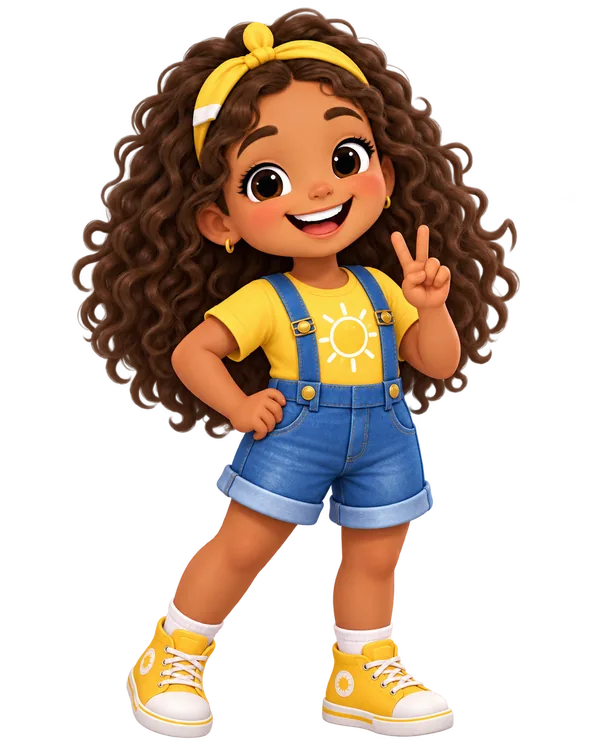
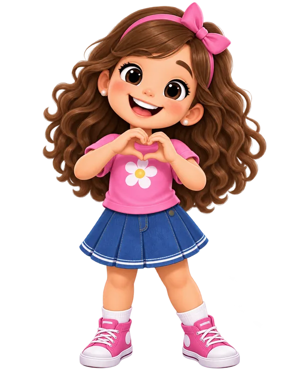
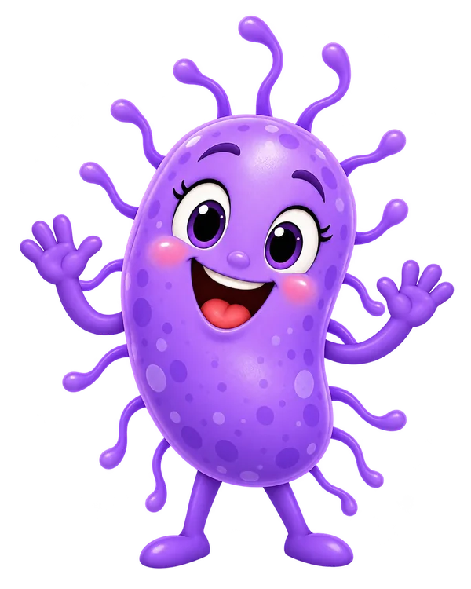

Converse
Ouça a criança sem culpa ou vergonha. Evite apelidos, julgamentos e exposição diante de colegas.
ÁREA DA FAMÍLIA
Orientações educativas para conversar sobre pediculose sem culpa, vergonha ou preconceito.

GUIA DA FAMÍLIA
Este conteúdo é educativo e não substitui avaliação ou orientação profissional.
Ouça a criança sem culpa ou vergonha. Evite apelidos, julgamentos e exposição diante de colegas.

Reforce atitudes de autocuidado e o uso individual de objetos pessoais apresentados nas atividades educativas.
Ao perceber sinais ou dúvidas, converse com um adulto responsável e procure orientação profissional adequada.

Use os jogos para conversar sobre prevenção, identificação, higiene, biossegurança e respeito.
JOGO DA FAMÍLIA
Jogue em família, responda aos desafios e aprenda sobre prevenção de forma divertida e acolhedora.
A pediculose deve ser abordada de maneira educativa e não estigmatizante. Informação e respeito fazem parte do cuidado.
O site foi pensado para apoiar ações de educação em saúde. Jogos e quizzes não servem como diagnóstico.